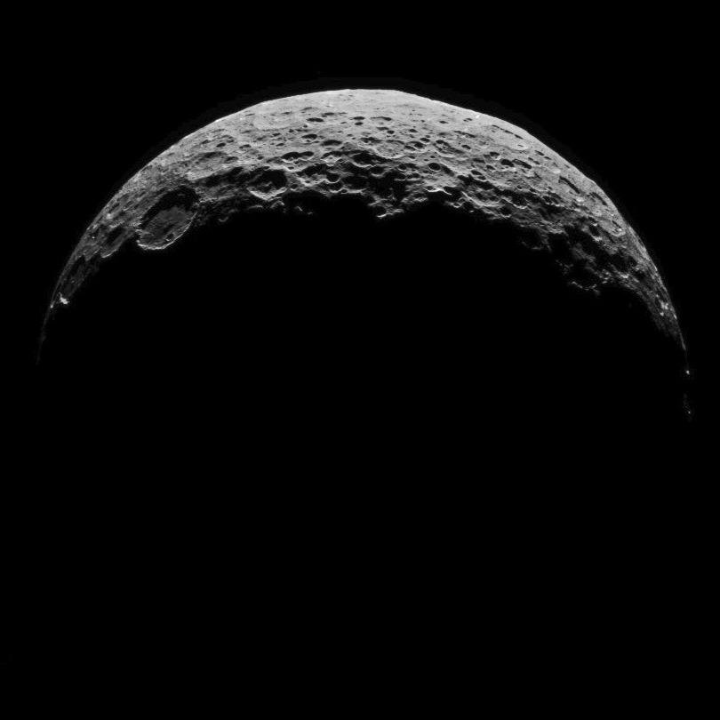
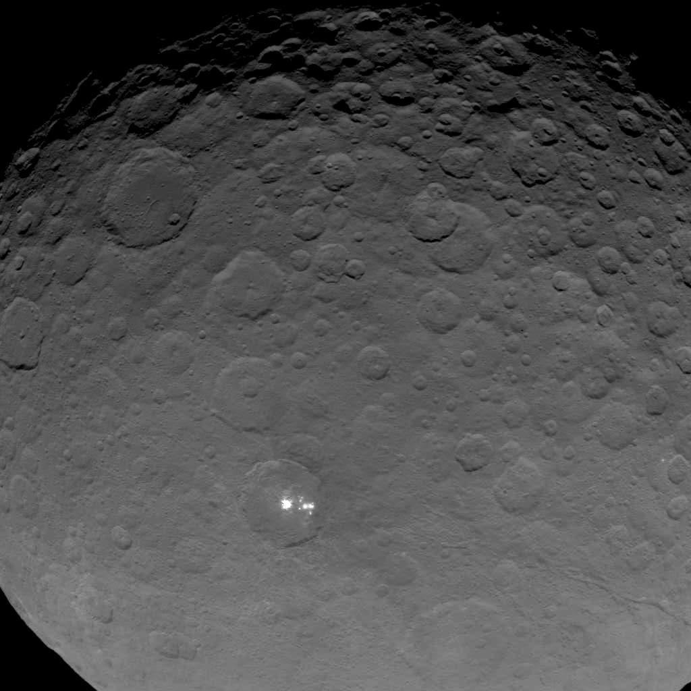

Ceres Radius 473 km (mean) Mass 9.39 × 1020 kg Orbit 4.6 Earth years  On March 6, 2015, NASA's Dawn orbiter reached the dwarf planet Ceres.  For some time, the mysterious bright spots became even more of an enigma.